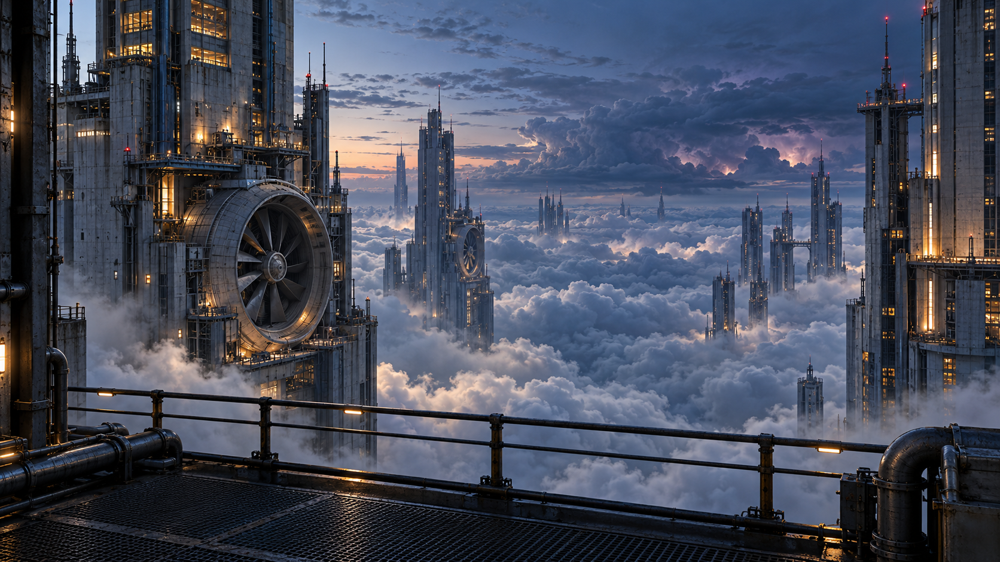

Загрузка и сравнение кадров WebGL…
Проверка архитектуры, движения облачных масс и плавности между соседними кадрами.
Используется настоящий WebGL-рендерер атмосферы после загрузки облачной текстуры. Время грозы зафиксировано на нуле, меняется только время ветра. Проверяются фасад, ограждение, трубы, настил и неподвижная исходная фотография облаков внизу слева. Форма центральных облаков проверяется также через 3 и 10 минут; прежние границы цикла и поздний переход через край текстуры проверяются отдельно.
Первые четыре секунды: один и тот же центральный участок облаков. Пиксельная проверка измеряет заметность изменения; направление проверяется отдельно по смещению самого рисунка облаков и рисунка изменений. Окончательная оценка естественности — при просмотре движения.

Ожидание…